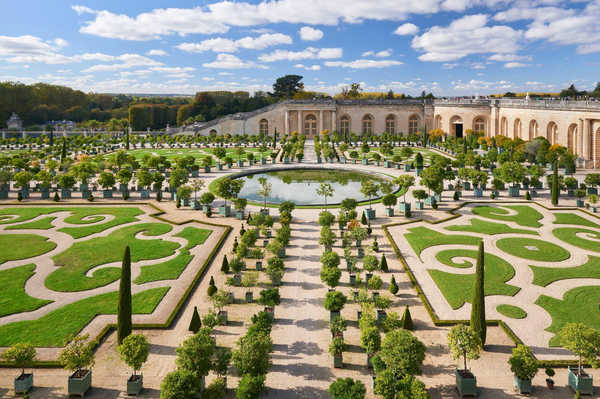

The tower has been used for making radio transmissions since the beginning of the 20th century. Until the 1950s, sets of aerial wires ran from the cupola to anchors on the Avenue de Suffren and Champ de Mars. These were connected to longwave transmitters in small bunkers. In 1909, a permanent underground radio centre was built near the south pillar, which still exists today. On 20 November 1913, the Paris Observatory, using the Eiffel Tower as an aerial, exchanged wireless signals with the United States Naval Observatory, which used an aerial in Arlington County, Virginia.


You can click the image to know more about Eifel Tower
Louvre, national museum and art gallery of France, housed in part of a large palace in Paris that was built on the right-bank site of the 12th-century fortress of Philip Augustus. It is the world’s most-visited art museum, with a collection that spans work from ancient civilizations to the mid-19th century.

You can click the image to know more about Louvre Museum
The Palace of Versailles is a former royal residence built by King Louis XIV located in Versailles, about 19 kilometers (12 mi) west of Paris, France. The palace is owned by the French Republic and since 1995 has been managed, under the direction of the French Ministry of Culture, by the Public Establishment of the Palace, Museum and National Estate of Versailles.
You can click the image to know more about Palace of Versailles